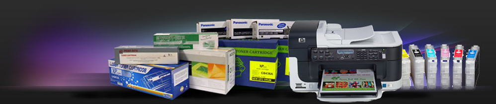

ТзОВ «Бінар-техно» понад 20 років професійно займається сервісним обслуговуванням та ремонтом оргтехніки, заправкою та відновленням картриджів для лазерних та струменевих принтерів, копіювальних апаратів, а також продажем офісної техніки та витратних матеріалів.
Звернувшись до нашого сервісного центру, ви можете бути абсолютно впевнені у високій якості виконаних робіт та обслуговування. Заправка відбувається на спеціалізованому обладнанні кваліфікованими спеціалістами із застосуванням сучасних технологій і якісних витратних матеріалів.
Якщо Ви вирішили скористатися нашими послугами, то Вам зовсім не обов'язково особисто відвідувати наш офіс. Ви можете просто подзвонити нам за телефоном у м. Івано-Франківську: (0342) 50‑47‑50, (050) 300‑77‑41, (097) 300‑77‑41 та залишити замовлення у диспетчера. В узгоджений час Вас відвідає наш спеціаліст та забере відпрацьовані картриджі або несправну оргтехніку. Після заправки/відновлення Ваших картриджів або ремонта/профілактики апарата ми доставим техніку Вам в офіс, а також підвезем всі бухгалтерські документи.
Своїм клієнтам ми пропонуємо найбільш зручний спосіб обслуговування.
Ви можете:
● звернутися в сервісний центр
● викликати майстра в офіс або на будинок
● скористатися кур'єрською службою
За багато років успішної роботи клієнтами нашого сервісного центру стали провідні компанії та заклади нашого міста.